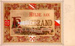
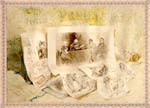
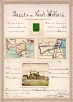
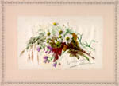
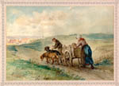
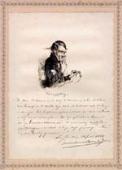

Beets 1903 - 2003
Tentoonstelling van 13 maart tot 11 mei 2003 in de Universiteitsbibliotheek
Samenstelling: C.J. Stiekema en A.Th. Bouwman
Tentoongestelde stukken
13. Nationaal huldeblijk: album amicorum
Hoezeer Beets een bekende Nederlander was (in het bijzonder als Hildebrand, auteur van de Camera Obscura), bleek op 13 september 1884 toen hem op zijn zeventigste verjaardag als nationaal huldeblijk een wel heel bijzonder album amicorum werd aangeboden. In een eikenhouten kist, versierd met houtsnijwerk, bevonden zich ongeveer vierhonderd bijdragen van vooraanstaande en gewone Nederlanders. Middels een gedicht, tekening, aquarel of anderszins toonden zij hun waardering voor de jubilaris. [LTK BEETS B 10]
|  | 13.1. ‘Hulde aan Hildebrand’, door J.M. Lion. – In potlood staat ernaast geschreven dat het wapen op deze plaat niet van de hier bedoelde Beets-familie is. |
|  | 13.2. Overzicht van enige van Beets’ werken, door Ch. Rochussen. – Deze tekenaar had ook enkele drukken van de Camera Obscura van een titelplaat voorzien. |
|  | 13.3. Het plaatsje Beets in Noord-Holland, door P.H. Witkamp. |
|  | 13.4. Boeket bloemen, door G.J. van de Sande Bakhuyzen. |
|  | 13.5. Kinderen met hondenwagen, door F. Lintz. |
|  | 13.6. ‘Verzuchting’, pentekening en gedicht door J. van Maurik Jr. |
| vorige pagina | volgende pagina |